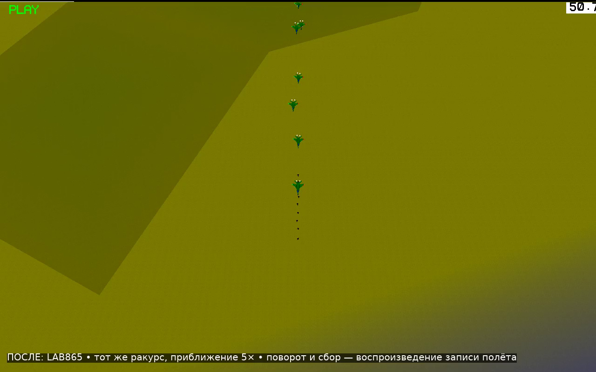
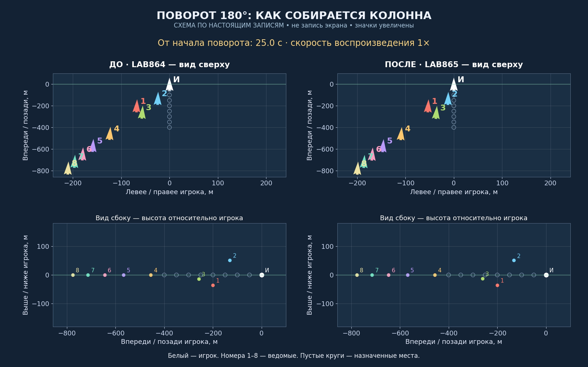
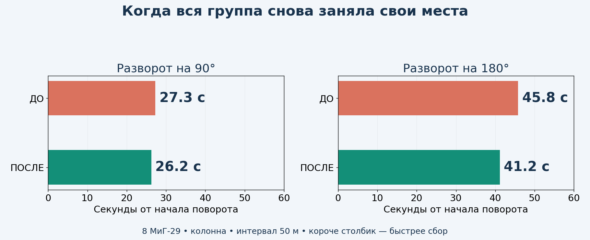
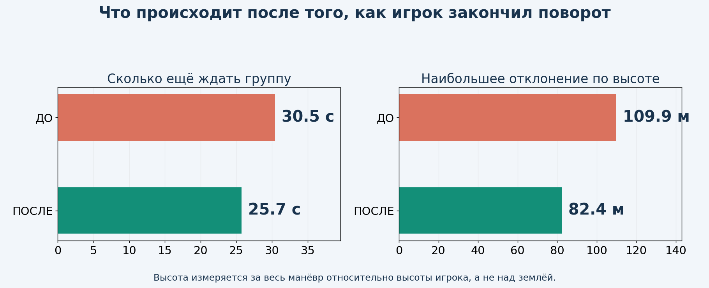
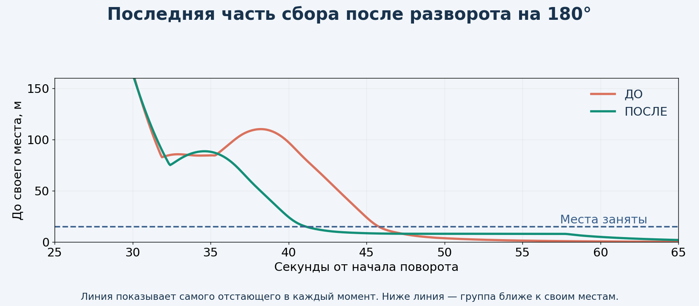
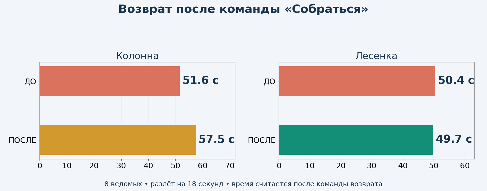

Это проверенная тестовая копия для просмотра. Рабочая v8.6.2 сохранена. Установочное обновление пока не выпускается: скорость возврата после разлёта требует доработки.
В игровых роликах сохранён ракурс последнего общего видео и выполнено твоё пожелание: камера приближена в 5 раз — 1100 → 220 м. У сильно растянувшейся группы часть самолётов может выходить из кадра. Видео с номерами показывает всю группу: это схема по настоящим записям, а не запись экрана. Игровые ролики воспроизводят те же реальные полёты в YSFlight.



После 180°: 45.8 → 41.2 с. После 90°: 27.3 → 26.2 с — здесь улучшение небольшое. Счёт начинается с начала поворота игрока и включает сам разворот.

Игрок закончил разворот на 180° — ждать полного сбора осталось 30.5 → 25.7 с. Максимальное отклонение по высоте в том же полёте: 110 → 82 м.


Колонна в основном сравнительном полёте: 51.6 → 57.5 с. Лесенка: 50.4 → 49.7 с. Эти цифры считаются после команды возврата. Здесь итоговый выигрыш нужно оценивать отдельно от разворота: новая логика не гарантирует ускорения каждого вида сбора.
Повторное сравнение возврата колонны — по три полёта на каждой копии: ДО 51.5–51.6 с, ПОСЛЕ 51.7–57.8 с. Все отдельные результаты приложены в замерах. Это проверка устойчивости времени, а не выбор одного удачного полёта.
Движения выполняются через штатную физику YSFlight. Защита от земли, ограничения самолёта и предотвращение столкновений сохранены.
В итоговой серии не было неожиданных потерь самолётов. Всего запусков: 104. 1–8 ведомых в колонне, все 10 строёв с восемью ведомыми, повороты на 90°/180°, резкие смены курса, малая высота, МиГ-29 и F/A-18, прикрытие, потери, разлёт/сбор и отставшие самолёты. Дополнительно: разгон и торможение ведущего, изменение скорости прямо во время сбора, смешанная группа МиГ-29/F/A-18, полёт в обычном времени, запись работы газа/тормоза и сохранение/загрузка нового режима перехвата. Ещё два контрольных полёта выполнены на прежней LAB864 для повторного сравнения. Также прошли 1400 проверок геометрии построений.
При проверках потерь один ведомый намеренно уничтожается. Минимальное измеренное расстояние в серии поворотов — 24.1 м между центрами самолётов.
Слишком резкие настройки дали сближение до 17 м. Другой опыт разрешал раньше снижаться, но не учитывал достаточно надёжно дальнейшие манёвры соседей: четыре сценария не прошли порог безопасной дистанции. Они отклонены. Исправленный коридор прошёл эти сценарии повторно. Ещё один опыт замедлил возврат колонны после разлёта примерно на 10 секунд. Разделение дальнего перехвата и точного входа помогло в короткой проверке, но полная серия показала, что ускорение возврата после разлёта пока неустойчиво. Это остаётся незавершённой частью задачи. Поэтому предварительный результат с отклонением по высоте около 53 м не относится к выбранной копии.
Возврат после разлёта не даёт устойчивого ускорения во всех проверках. В обычном полёте у одного ведомого сохранилось около 8 м ошибки позиции; точный вход в последние метры также нужно дорабатывать. Эти результаты относятся к тестовой копии, поэтому установочный выпуск не подготовлен.
«Место занято»: все ведомые ближе 15 м к своим назначенным местам, и это сохраняется до конца записи минимум две секунды. Основные сравнительные полёты: 8 МиГ-29, колонна, 50 м между местами, высота 1000 м. Это улучшение ещё не делает сбор мгновенным; после тяжёлых манёвров ожидание остаётся.
Основные автоматические полёты считаются самой игрой с шагом 0,025 с; измерения примерно через 0,075 с. Отдельно проверен обычный цикл игры. Тесты выполнены на лабораторной 64-битной сборке под Wine. Windows 10 x86 требует отдельной будущей сборки и проверки запуска. Испытания не гарантируют отсутствие столкновений при любых моделях, интервалах и действиях игрока.
Сохранить исходники и проверки · Подробные замеры и записи